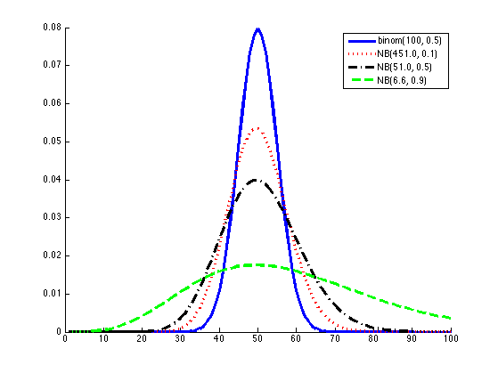
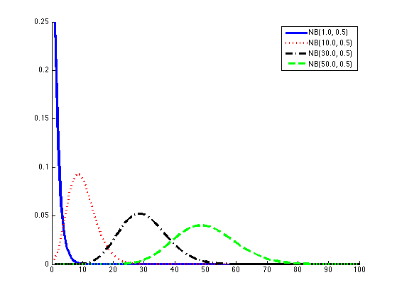

function negBinomDemo()
for trial=1:2
N = 100;
theta = 0.5;
xs = 1:N;
probs = [];
c = 1;
if trial==1
for i=1:numel(xs)
x = xs(i);
probs(i,c) = binopdf(x,N,theta);
end
names{c} = sprintf('binom(%d, %3.1f)', N,theta);
c = c+1;
end
mu = N*theta;
if trial==1
thetas = [0.1, 0.5, 0.9];
fs = 1+(1-thetas)./thetas * mu;
else
thetas = [0.5, 0.5, 0.5, 0.5];
fs = [1 10 30 50];
end
for k=1:numel(thetas)
theta=thetas(k);
f=fs(k);
names{c} = sprintf('NB(%3.1f, %3.1f)',f,theta);
for i=1:numel(xs)
x = xs(i);
probs(i,c) = exp(negbinomlogpdf(x,f,theta));
end
c=c+1;
end
[styles, colors, symbols, str] = plotColors;
figure; hold on
for j=1:size(probs,2)
plot(probs(:,j), sprintf('%s', styles{j}), 'color', colors(j), 'linewidth', 3);
end
legend(names)
printPmtkFigure(sprintf('negBinomDemo%d', trial))
end
end
function p = negbinompdf(s,f,theta)
p = nchoosek(s+f-1,s)*theta^(s)*(1-theta)^f;
end
function logp = negbinomlogpdf(s,f,theta)
logp = nchoosekln(s+f-1,s) +s*log(theta) + f*log(1-theta);
end
 